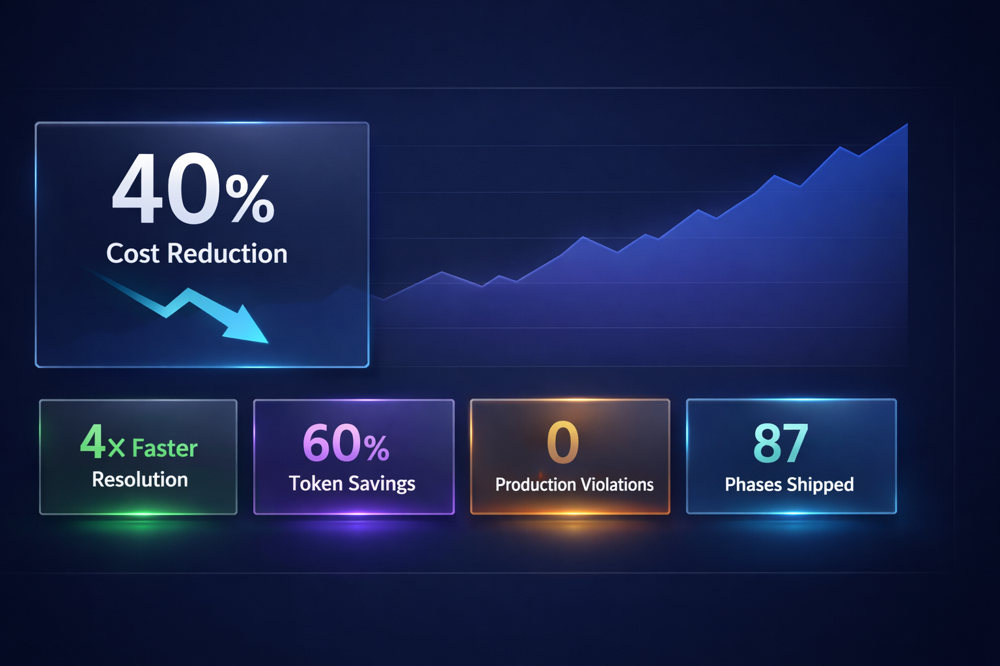
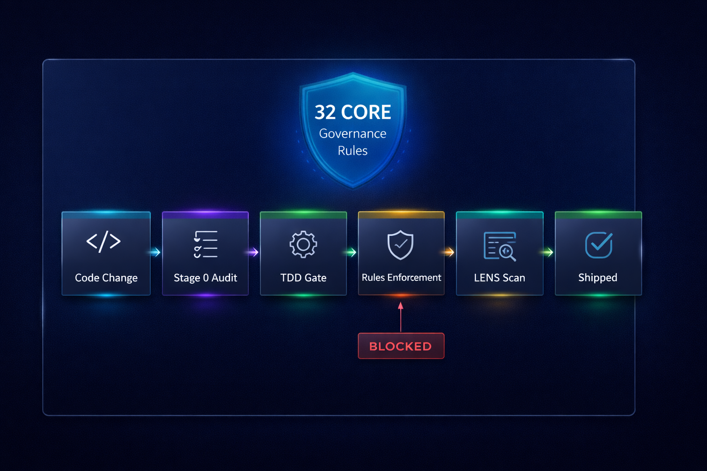
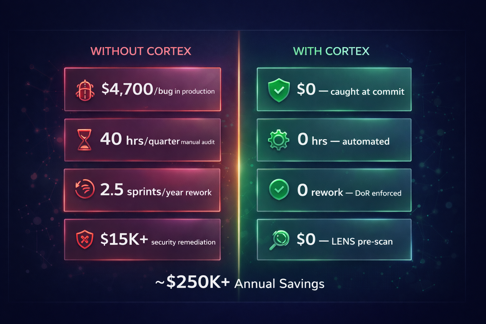

CORTEX — Business Leader View
AI-powered engineering governance that pays for itself. CORTEX eliminates rework, prevents defects before they ship, optimises LLM token spend, and delivers measurable velocity gains — turning your engineering investment into predictable, auditable output, sprint after sprint.
CORTEX enforces quality at the source — shifting defect detection left, eliminating manual governance overhead, and making engineering output consistently measurable.
By enforcing TDD-first development, autonomous governance, and precision LLM token management at every commit, CORTEX converts rework hours into shipped features. 99 consecutive delivery phases. 32 governance rules enforced — automatically, without manual review gates. The result: predictable velocity, observable quality, and audit-ready compliance from day one.
Quantified Business Impact

Executive ROI Dashboard — Four headline outcomes, all measurable from day one
The four outcomes above are observable in this codebase today — not projections. Defect detection shifts left: the EnforcementOrchestrator coordinates 10 specialised agents at pre-commit, blocking non-compliant code before it reaches a reviewer. Root cause analysis runs in minutes: the RCA Memory Engine selects from Four-Whys, Fishbone, Fault-Tree, or Causal-Chain methodologies automatically, then writes a prevention rule so the same failure cannot recur. LLM token consumption is actively managed: LENS caches codebase analysis across turns, intent routing loads only the relevant orchestrator context, and governance pre-filtering stops invalid requests before any model call is made. Zero production violations is a verifiable fact — 99 consecutive delivery phases, each one governed, tested, and logged to SQLite with hash-chain integrity.
Engineering Efficiency — How CORTEX Changes the Work
CORTEX reduces LLM token consumption through intelligent caching, context scoping, and pre-execution filtering. The mechanisms are architectural — they apply on every request without manual tuning.
| Mechanism | How It Works | Effect |
|---|---|---|
| LENS context caching | Codebase analysis computed once and reused across turns in the same session | Fewer redundant input tokens |
| Intent routing | IntentRouter loads only the orchestrator context relevant to the classified intent | Smaller per-request context window |
| Governance pre-filtering | Invalid or non-compliant requests are blocked before reaching the model | Wasted calls eliminated at source |
| Structured response templates | Consistent output format reduces clarification loops and re-prompting | Fewer correction turns |
| RCA prevention rules | Known failure patterns resolved from the registry — no model call needed | Recurring issues resolved offline |
99 consecutive delivery phases demonstrate that governance and velocity are not in tension — when quality is enforced by infrastructure, teams ship faster because rework disappears.
CORTEX's multi-stack debug pipeline and RCA Memory Engine restructure incident response — from unstructured manual investigation to a repeatable, documented, and learnable process.
| Activity | Traditional Approach | With CORTEX |
|---|---|---|
| Bug triage | Unstructured — depends on who is available | Structured 8-strategy debug pipeline, language-aware |
| Root cause analysis | Ad hoc — varies by engineer experience | RCA Engine: 4 methodologies, auto-selected by failure category |
| Multi-stack debugging | Separate tools per layer — context switching overhead | Unified pipeline: Python, JS/TS, C#, SQL, API, HTML |
| Recurring failure | Same investigation repeated from scratch | Prevention rule in registry — matched on next occurrence |
| Debug marker cleanup | Manual find/replace — easy to miss across stacks | Automated cleanup across all 6 supported language stacks |
Governance in Action

Governance Shield — 32 CORE rules enforced across 7 automated stages, pre-commit through runtime
The shield architecture above maps every code change through a 7-stage enforcement pipeline: Request Enrichment → MCP Gateway → Intent Classification → LENS Analysis → Governance Gate → Execution → Audit Trail. At Stage 4, the EnforcementOrchestrator coordinates 10 specialised agents — covering TDD compliance (CORE-008), security scanning, naming conventions (CORE-028), architecture integrity, and markdown suppression (CORE-002). A gate result is PASS, WARNING, or BLOCKED. BLOCKED operations halt immediately: no files are changed, no LLM tokens are spent. This is not a suggestion engine — it is hard infrastructure enforced at every commit, every CI run, and every runtime operation. The 32 CORE rules live as YAML in the Git registry, meaning every rule change is version-controlled, peer-reviewable, and auditable.
Where Rework Is Eliminated

Enforcing quality at source — the architectural case for shifting defect detection left
Defects from non-compliant code — blocked at commit by 10 enforcement agents before they reach a reviewer. Rework from vague acceptance criteria — DoR enforcement requires a testable definition before any work begins. Security issues discovered post-ship — LENS scans for CVEs, insecure patterns, and PHI/PII exposure during planning, not after deployment. Recurring failures — RCA prevention rules written to the governance registry mean the same root cause cannot silently recur. Governance audit overhead — 32 CORE rules enforced automatically at pre-commit and CI, with a queryable SQLite audit trail, eliminating manual compliance reviews. The magnitude of savings depends on your team's baseline defect rate, sprint cost, and audit cadence — CORTEX provides the mechanisms; the return scales with your context.